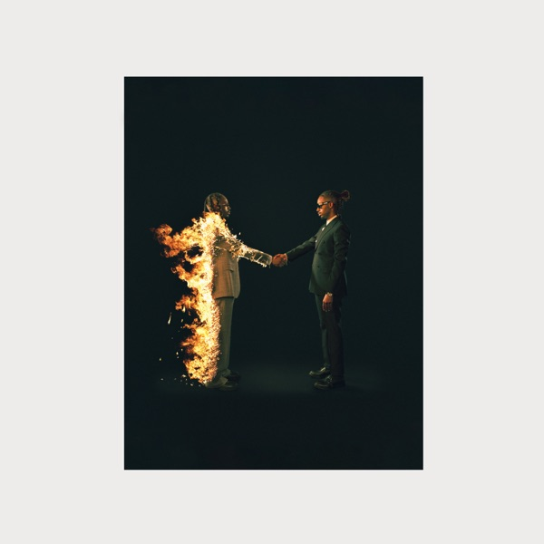

Альтернативная музыка
Хип-хоп
Альтернативный поп
Метал
Инди и электроника

Хип-хоп
twenty one pilots · 2018
Trench сочетает альтернативный рок, электронную музыку и хип-хоп. Плотный бас, живые ударные и смены вокальной подачи создают напряжённое, но мелодичное звучание.
Через образ вымышленного мира группа говорит о страхах, сопротивлении и поддержке.
Переход от энергичных Jumpsuit и Levitate к спокойной Leave the City делает альбом цельным музыкальным путешествием.
Альтернативная музыка, хип-хоп, поп и метал — альбомы любимых исполнителей и близкие по звучанию записи.
Мягкая электроника, акустические инструменты и хрупкий вокал. Песни развиваются неторопливо, оставляя много пространства между звуками. Начните с Breathe In и I’ll Keep Coming.
Глубокий бас, мрачные синтезаторы и выразительные переходы связывают треки между собой. Разные голоса меняют характер песен, сохраняя общую кинематографическую атмосферу.
Для дальнейшего знакомства: MUTEMATH — Odd Soul, FINNEAS — Optimist и Woodkid — The Golden Age. Все 60 альбомов собраны в каталоге.